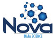
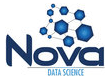

Data Community DC
Data Community DC (DC2) is an organization committed to connecting and promoting the work of data professionals in the National Capital Region by fostering education, opportunity, and professional development through high-quality, community-driven events, resources, products and services.
 

Our meetups
The pulse of Data Community DC (DC2) is measured by its Meetups. Covering the spectrum of data science, DC2 promotes data scientists and their work, from gathering and organizing data (Data Wranglers DC), to developing options and hypotheses about the data (Data Education DC), developing algorithms (Data Science DC, Women Data Science DC & Full Stack DS), implementing those algorithms (Statistical Programming DC), building businesses around the data, communicating your work (Data Viz DC), and collaborating around your work (DC Digital Nomads).